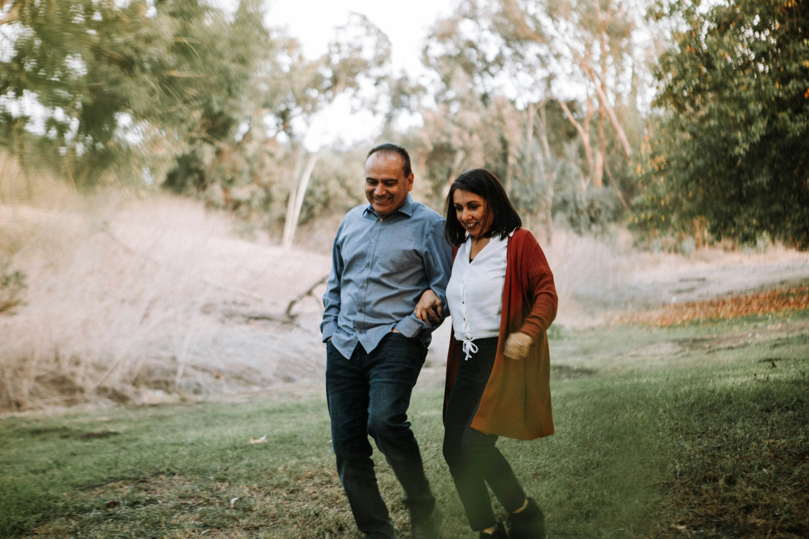
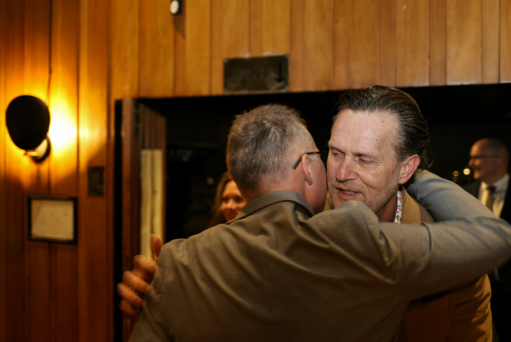
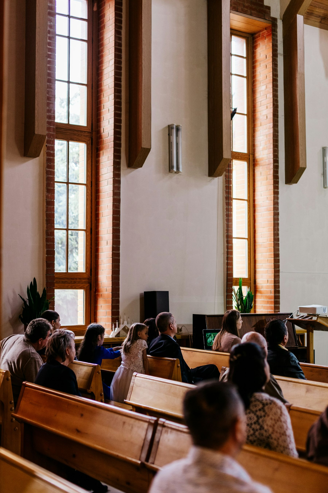
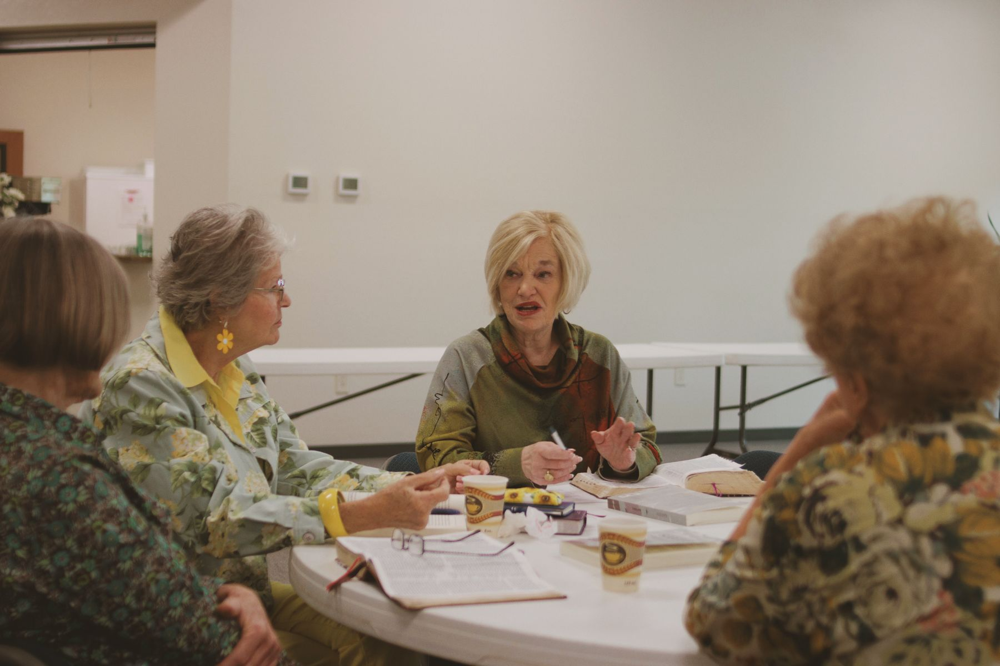
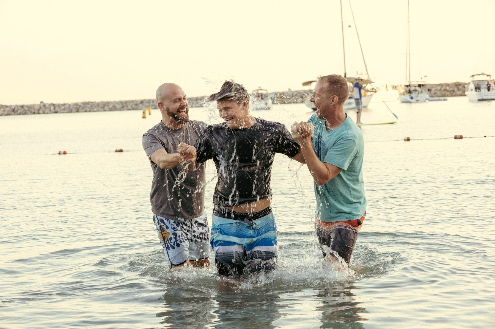
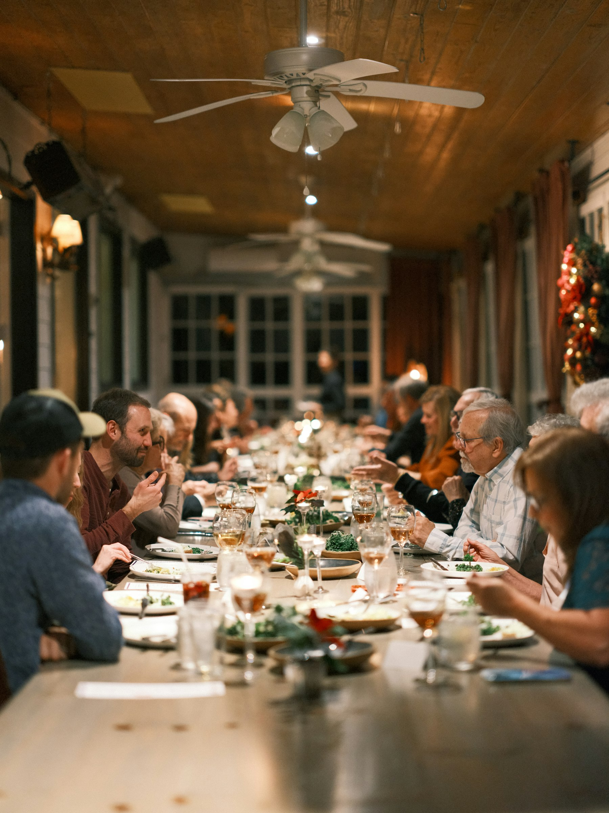

since 1891 · Richmond, VA
Deep roots, open doors, open table, open arms.
A historic church with old hymns, warm people and good coffee. Someone will meet you at the side door and walk you in.
Sundays 9:00 & 11:00 AM1418 Calder Hill Road, Richmond, Virginia
NewsThe bell tower is being restored. Help us ring it again by Easter.
Our mission
To know Christ, to love Richmond, and to keep the door open for whoever comes next.
Ask for the old paths, where is the good way, and walk therein, and ye shall find rest for your souls.
Jeremiah 6:16

Our pastors
Samuel and Ruth
Samuel preaches most Sundays. Ruth leads our care and prayer ministries. Both of them would rather hear your story than tell their own.
They live a few blocks from the chapel with two teenagers, a garden that is mostly tomatoes, and a beagle who has never met a stranger. Come say hello after either service.
Where to begin
Start wherever you are
Three good places to begin, whether you are new to Richmond or coming back to church after a long while.

Plan Your Visit
Your first Sunday, plainly explained. Where to park, what to expect and where the coffee is.
Your first SundayGet to Know Us
A long story, a simple faith and a room full of good neighbors. Here is how it all began.
How it beganGive
Your generosity keeps the pantry stocked, the doors open and the bell ringing. Thank you.
Give onlineStart Here
New to Calder Hill? Join the pastors for lunch on the first Sunday of the month.
RSVP for lunchSmall Groups
Twenty tables across Richmond, meeting in homes during the week.
Find a groupEvents
Wednesday suppers, hymn sings and Advent lessons and carols.
See the calendarNeed Prayer
Tell us what is heavy this week. Our prayer team will pray for you by name.
Ask for prayerSince 1891
Every Sunday for 135 years, someone has held the door.
Come as you are, sit where you like and stay for coffee. You will be among friends sooner than you think.
Life at Calder Hill
Hymns, suppers and everything in between
This is an ordinary week with our church family: singing in the morning, supper on Wednesdays and long talks on the front steps.





Our next river baptism is Sunday, June 6, 2027. If you have been wondering about it, we would be glad to talk it through. Ask about baptism
Latest message
Lift up your eyes
Sunday, November 15, 2026
Missed a Sunday, or want to send a message to a friend? Here is the latest from our fall series, Songs for the Road.
Kind words
What our neighbors say
Reviews from people who visited once and stayed a while.
We visited once and someone remembered our names the next Sunday. Eight years later, this is home.

Stay in touch
The Thursday letter
One short email a week: what is coming up, the latest message and one good thing happening in the neighborhood.
Carrying something heavy? Send a prayer request and our prayer team will pray for you by name.